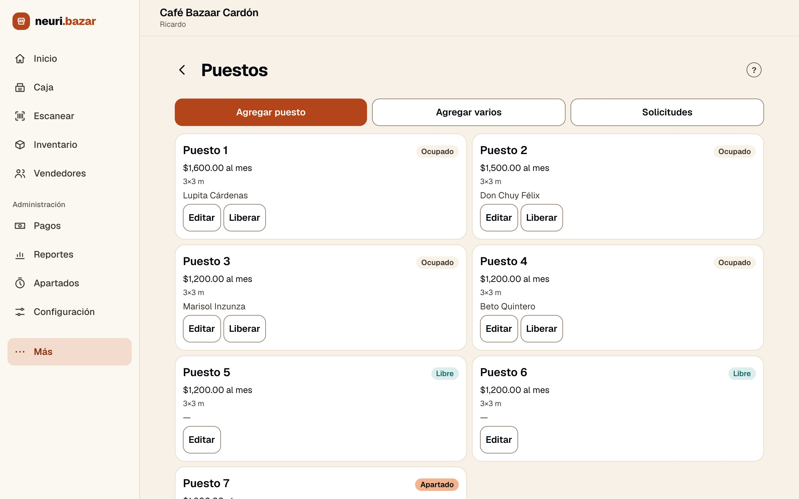
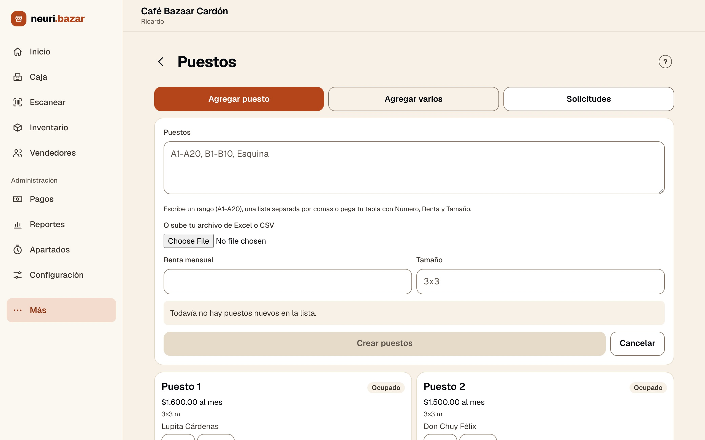
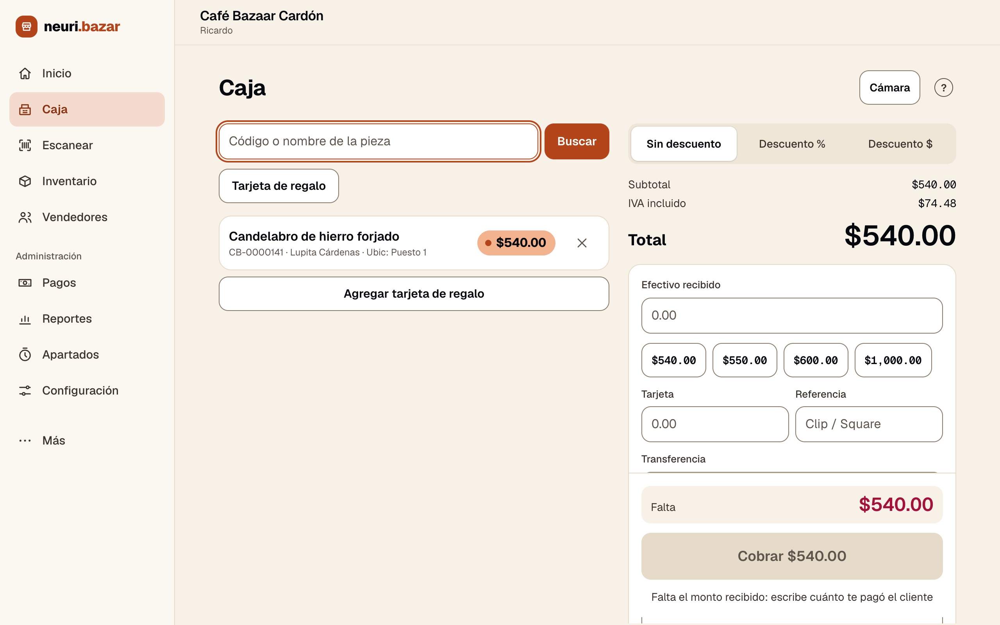
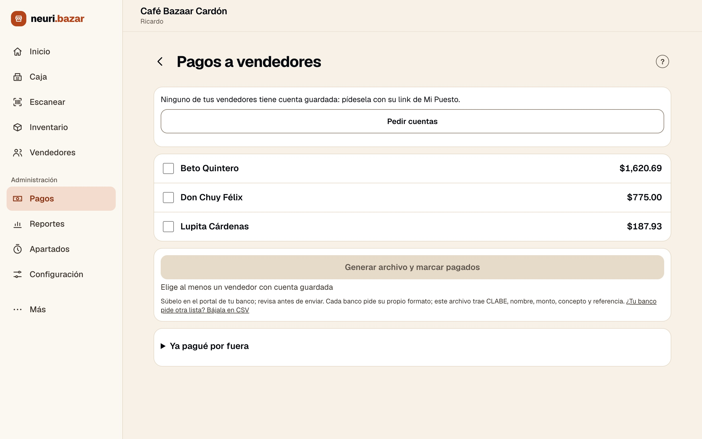
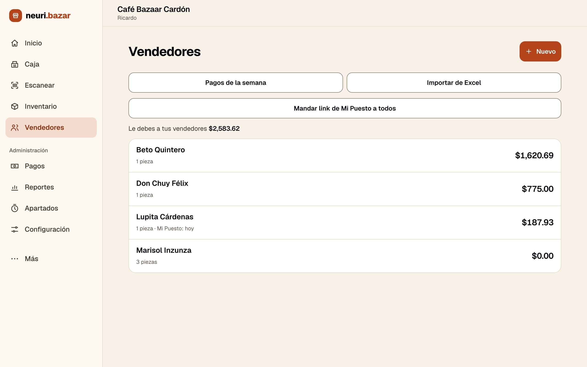
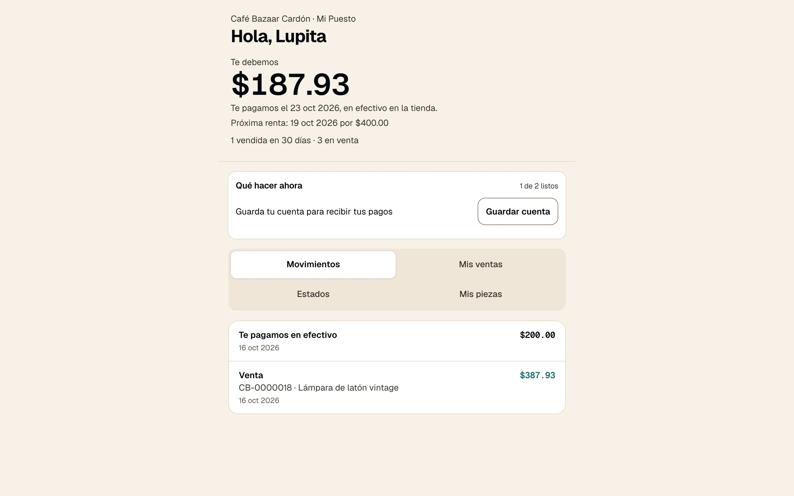
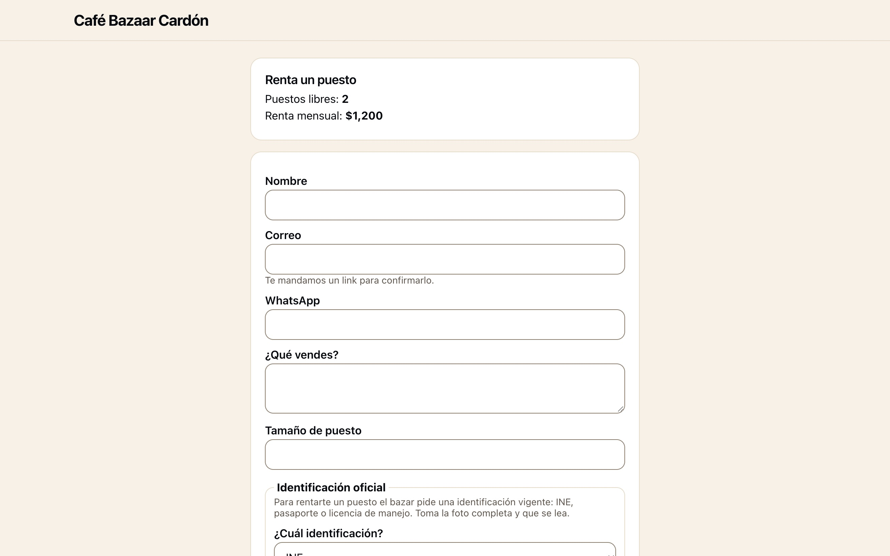
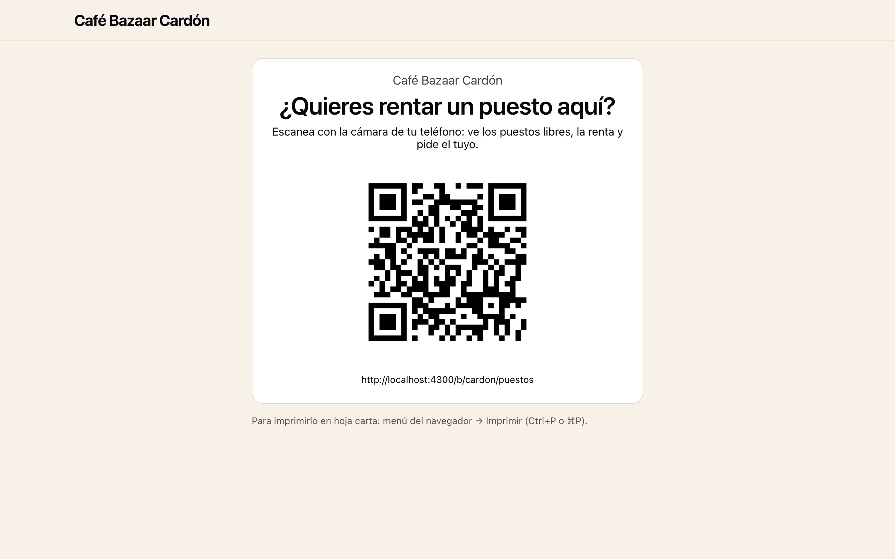

Pantallas reales de la app con un bazar de ejemplo en pesos. Los puestos se rentan a precio fijo al mes; el bazar cobra en caja y cada vendedor ve cuánto se le debe.
Cada puesto con su renta mensual, tamaño, vendedor y estado: ocupado, libre o apartado. Libera o edita un puesto en un toque.

¿Estás armando el bazar? «Agregar varios» acepta un rango como A1–A20, una lista o tu archivo de Excel/CSV con número, renta y tamaño.

Busca una pieza por código o nombre; dice de qué vendedor y puesto es. Cobra en efectivo o tarjeta (con la referencia de tu terminal), con descuento o tarjeta de regalo.

Ve cuánto le debes a cada vendedor, genera un archivo para subir al portal de tu banco o registra que pagaste de otra forma.

Todos los que rentan un puesto, en una sola lista.

Cada vendedor abre su propia página: cuánto se le debe, cuándo le pagas, su próxima renta, sus ventas, piezas y estados de cuenta. Menos llamadas de «¿se vendió algo?».

Una página pública muestra cuántos puestos hay libres y su renta, y recibe solicitudes; quien solicita confirma su correo y, en México, sube su identificación oficial.

Imprime un cartel tamaño carta con un código QR que abre esa página.

Empieza tu prueba gratis y carga la demo desde Inicio en un toque.
Las pantallas muestran datos de ejemplo. Volver a neuri.bazar